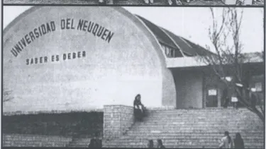

Resumen de la Escuela Normal Superior"Juan Carlos Davalos"
 Reseña del Prof. Eduardo Poma El primer Colegio de Nivel Secundario que hubo en Metán
surge por iniciativa del entonces párroco José Mir, en 1943. Tenía el carácter de
establecimiento privado, con el nombre oficial de Instituto adscripto "José Manuel Estrada"
y abarcaba solamente el ciclo básico del viejo sistema, es decir, hasta el 3º año.
Reseña del Prof. Eduardo Poma El primer Colegio de Nivel Secundario que hubo en Metán
surge por iniciativa del entonces párroco José Mir, en 1943. Tenía el carácter de
establecimiento privado, con el nombre oficial de Instituto adscripto "José Manuel Estrada"
y abarcaba solamente el ciclo básico del viejo sistema, es decir, hasta el 3º año.
 Los egresados de este Instituto si querían seguir estudiando se veían obligados a
trasladarse a las ciudades vecinas, generalmente a salta y Tucumán. Esta circunstancia,
mas la obligación de abonar un arancel para poder cursar los estudios en el Colegio
fundado por el padre Mir, hacia que solo las familias pudientes alentaran la esperanza
de poder enviar sus hijos a las Universidades.
Los egresados de este Instituto si querían seguir estudiando se veían obligados a
trasladarse a las ciudades vecinas, generalmente a salta y Tucumán. Esta circunstancia,
mas la obligación de abonar un arancel para poder cursar los estudios en el Colegio
fundado por el padre Mir, hacia que solo las familias pudientes alentaran la esperanza
de poder enviar sus hijos a las Universidades.

En 1950 Metán alcanza los 10.000 habitantes, y con ello la categoría de ciudad que le
otorga la provincia, pero seguía sin contar con una institución de enseñanza secundaria
completa. Esto movilizo a un grupo de vecinos que realizaron intensas gestiones ante
las autoridades de la nación.